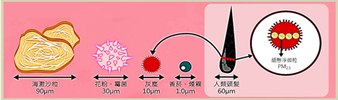

什麼是細懸浮微粒(PM2.5)?
空氣中分布著許多物質，其形態可分為固態、液態或氣態等等，就一般而言，粒徑小於10微米(μm)的粒子稱之為PM10，而粒徑小於2.5微米(μm)則為PM2.5。
- 落塵:指粒徑在10微米(μm)以上之粒狀污染物，可被人體纖毛和黏液過濾，較難以通過鼻子和咽喉。
- 懸浮微粒(PM10) :指粒徑在10微米(μm)以下之粒狀污染物，又稱為「可吸入懸浮粒子」，可以穿透這些屏障達到肺部。
- 細懸浮微粒(PM2.5) :指粒徑在2.5微米(μm)以下之粒狀污染物，又稱為「細懸浮微粒」，更易吸附有毒害的物質。由於體積更小，PM2.5具有更強的穿透力，可穿透肺部氣泡，直接進入血管中隨著血液循環全身。主要由硫和氮的氧化物轉化而成，這些氣懸膠污染物來自於化石燃料（煤、石油等）和燃燒物質所產生。

細懸浮微粒粒徑說明圖形
圖片來源: 行政院環保署
")